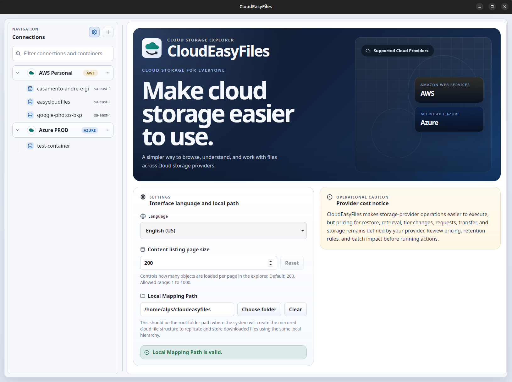

Cloud Storage Explorer
Easily manage your cloud storage.
CloudEasyFiles helps people use cloud storage and cloud computing services for backup and file access without depending on complex provider consoles. Today it supports AWS S3 and Azure Blob Storage, and it was built with Rust, Tauri, AI development workflows, and Spec Driven Development.
Why This Matters
Backups are essential, but the common options are often expensive, fragile, or hard to use.
Many people still depend on external drives for backup. That usually means higher upfront cost, limited redundancy, and the constant risk of loss, damage, or hardware failure.
Cloud computing providers offer a better option. Their archive and low-cost cloud storage tiers are reliable and inexpensive, but the setup, restore flow, and day-to-day file access are still hard for many users to understand.
Make low-cost cloud backup and archive services easier for normal users to understand and use.

Core Workflow
Connect your storage account, browse files, restore archived items, and download what you need.
The app gives you one place to work with your storage accounts. You can connect AWS or Azure, open containers and folders, check file status, upload and download files, and handle archive restore flows with simpler language.
- Save connections securely for AWS S3 and Azure Blob Storage
- Browse folders and files with filtering, upload, and download
- See clear file states such as Available, Archived, and Restoring
- Understand restore cost and timing tradeoffs before starting a retrieval
Reduce the steps and confusion involved in using archive storage for real backup and recovery needs.

Provider Detail
Provide an easy way to manage the storage tiers available in each provider.
Change storage classes and restore archived files with clear options.

Manage Azure tiers and rehydration with language that is easier to follow.

Case Study
Built as a deliberate experiment in AI development and Spec Driven Development.
CloudEasyFiles was designed from the start as a personal AI development case study: a real problem, a real product, and a deliberate choice of unfamiliar technology. I chose Rust and Tauri — languages and frameworks I had never worked with — specifically to create an honest challenge. If a methodology only works with comfortable tools, it is not a methodology.
The result was an extreme success. A working, well-documented desktop application with clear architecture decisions, comprehensive test coverage, and a consistent feature delivery cadence — all built with a productivity and quality level that would not have been achievable through traditional approaches in an unfamiliar stack.
Every feature starts as a written spec, not as code.
Before any implementation begins, the feature is described in a clear specification: its goal, behavior, edge cases, and constraints. This keeps the developer and the AI aligned throughout the SDD build, and creates a durable artifact that outlives the implementation itself.
AI drives the implementation loop, not just individual tasks.
AI is used across the full development cycle — from spec refinement and architecture review to code generation, test writing, and documentation. The key discipline is keeping the developer in charge of intent and quality, while letting the AI handle velocity.
Rust and Tauri were chosen for the challenge, not for comfort.
With no prior experience in either, the stack was selected precisely to test the limits of this approach. Rust's strictness and Tauri's cross-platform model demanded real understanding — and the methodology delivered, at speed.
Technology
Cloud storage software shaped by cloud computing needs and AI-assisted delivery.
CloudEasyFiles connects practical cloud computing workflows with a desktop experience for AWS S3 and Azure Blob Storage. The product focuses on cloud storage operations that matter in backup and recovery scenarios: browsing, filtering, uploading, downloading, previewing, tier changes, and archive restore requests.
The engineering approach is also part of the project. CloudEasyFiles is a case study in AI development using Spec Driven Development, also referenced as SDD, where specs, tests, architecture decisions, and implementation move together instead of being treated as separate afterthoughts.
- Cloud Storage software for AWS S3 and Azure Blob Storage
- Cloud Computing workflows for backup, archive access, restore, and file recovery
- AI development process using Spec Driven Development and SDD documentation
- Rust and Tauri desktop architecture with React and TypeScript on the frontend
About The Builder
15+ years of experience. A deep focus on what AI-assisted development can really achieve.
CloudEasyFiles is both a working product and a proof of concept. I built it to develop a rigorous, repeatable methodology for AI development and Spec Driven Development — one grounded in real outcomes, not in demos.
Built by
Andre Luiz Pires Silva
Software developer with more than 15 years of experience across backend engineering, cloud platforms, serverless systems, software architecture, and multi-platform product delivery.
This project is my personal case study for Spec Driven Development with AI. If you are exploring what modern AI-assisted development looks like in practice — or want to discuss the methodology, the results, or a potential partnership — feel free to reach out.
Download
Download the latest version.
Download the latest published desktop build for the project.